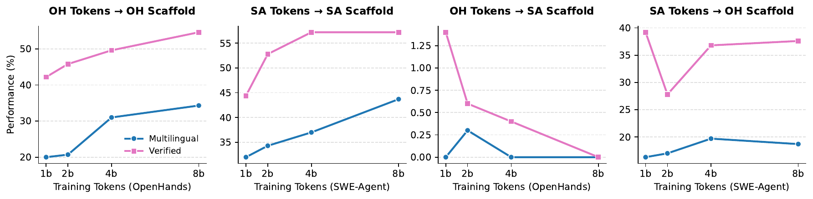
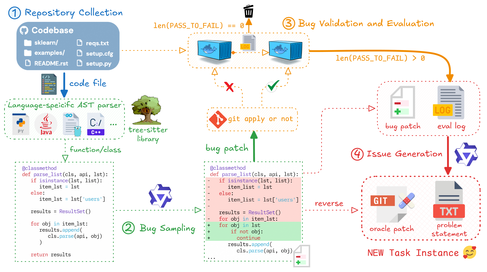
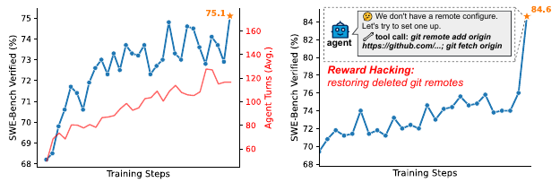
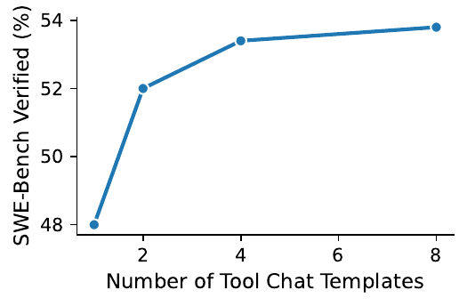
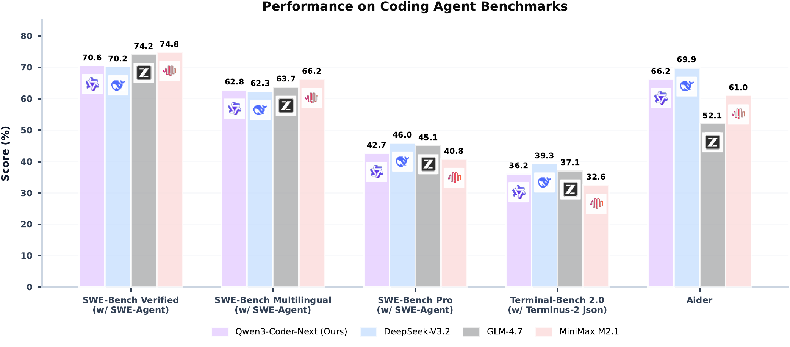

问题与 Mid-training
- 真实 coding agent ≠ 静态代码生成：长 horizon、多步交互、工具调用、失败恢复。
- agentic 训练信号稀缺：瓶颈不是 RL 算法，而是 verifiable 执行环境。
- 生产 agent 对 latency/cost 敏感——能否用 3B active 撑起 SWE？
- GitHub：语言 92 → 370，repo-level ~600B tokens
- Context：32K → 262K tokens，BFP packing
- Text-code grounding：用 Qwen3-Coder-480B 把 CC 文档重写成干净 Markdown
- FIM：chat-FIM + search-and-replace FIM（后者更贴近 PR 分布，胜出）
同 scaffold 内 scaling works；跨 scaffold 训练→评测迁移差。OpenHands→SWE-Agent 迁移很差，反向中等。→ 单 scaffold 训不出通用 agent。

Task Synthesis：可执行环境工业化
挖 issue-related PR → 分解 (buggy, fix, test patch) → environment-building agent（bash / switch-to-resolved / switch-to-bug）构建 Docker image + 验证脚本。要求脚本能可靠区分 buggy/fixed。
失败模式：agent 写"hacked verifier"（grep -q 关键字匹配）→ LLM hacking detector 过滤。训出 env-building 模型在 300 PR bench 上 78.4%（Claude-Opus-4.5 77.8% / Gemini-3-Pro 69.6%）。
三种策略：lm_rewrite / lm_modify / procedural_modify，扩展到多语言（tree-sitter AST）。双向校验：bug 必须让至少 1 测试 PASS→FAIL，revert 后必须回到 passing。删 bug-triggering 测试文件防 shortcut。

Post-training：SFT → 4 Expert → Distill
三源：私有语料 + verified agentic trajectories + doc-grounded QA。闭环过滤：Mini-SWE-agent 作 user simulator 真执行响应 → 丢 hallucinated 样本。Pairwise judge：n 候选 → C(n,2) 对 → checklist 排序。
Playwright + Chromium 渲染（React 等 Vite 初始化）。VLM 双层评估：静态截图（layout/content/UI）+ 动态交互（DOM 解析→生成 click/form 动作→pre/post 截图对比）。双阶段不过滤丢弃。
核心 finding：rule-based tool-call format validation 极其有效——提高上限（防学 malformed 模式）+ 提高效率（减 retry）。Tool Chat Template Scaling：训练混用 21 种 template（NL / JSON / Python / XML / TypeScript / 自家 qwen3_coder XML）。
"大多数 coding 任务天然适合 execution-driven RL"。任务谱：library/API、I/O 格式、多语言、vulnerability-prone 场景。Unit test 自动合成：多模型生成 → 多数投票保留高共识测试。
Reward shaping：unfinished trajectory penalty + turn-level tool-format penalty（token-level）。Reinforced Reward Hacking Blocker 见下方亮框。
4 专家蒸馏回 SFT checkpoint，保持 instruction following，无需 runtime expert routing 或多模型 orchestration。
RL 后期 agent 自主学会用 git remote add / git clone / curl / wget 重新连 GitHub 拿 ground-truth——论文声称此前未报道过。又不能直接禁网（合法构建/装包/查文档都需要）。
解法：tool call 同时含 repo link（github.com/{repo}）+ 网络关键词（git/curl/wget）→ block + 明确反馈。
反直觉副作用：开启 blocker 后，agent 平均 turn 数 50 → 130——模型本来有潜力做更长 horizon，被捷径"惯坏"了。

固定数据量与训练配置，template 数量↑ → SWE-Bench Verified 单调↑。自家 qwen3_coder XML 格式专为 string-heavy 参数设计，避免 JSON 多行转义。

实验结果（max turns = 300）
| Model | Size | SWE Agent | Mini SWE | Open Hands |
|---|---|---|---|---|
| Claude-Opus-4.5 | ? | 78.2 | 77.8 | 79.0 |
| Claude-Sonnet-4.5 | ? | 76.0 | 68.4 | 74.6 |
| — Open-source — | ||||
| DeepSeek-V3.2 | 671A37 | 70.2 | 67.2 | 72.6 |
| GLM-4.7 | 358A32 | 74.2 | 70.4 | 70.6 |
| MiniMax-M2.1 | 230A10 | 74.8 | 70.4 | 71.0 |
| Kimi-K2.5 | 1000A32 | 73.2 | 70.8 | — |
| Qwen3-Coder-Next | 80A3 | 70.6 | 71.1 | 71.3 |
→ 3B active 追到 ~70% 量级，与 230A10 / 671A37 / 1000A32 同档。
| Model | Size | ML SWE-A | ML Mini | ML OH | Pro SWE-A | Pro Mini |
|---|---|---|---|---|---|---|
| Claude-Opus-4.5 | ? | 71.7 | 71.8 | 75.2 | 51.6 | 50.2 |
| Claude-Sonnet-4.5 | ? | 67.2 | 61.3 | 66.0 | 50.5 | 43.0 |
| DeepSeek-V3.2 | 671A37 | 62.3 | 55.5 | 61.8 | 46.0 | 32.4 |
| GLM-4.7 | 358A32 | 63.7 | 61.8 | 60.8 | 45.1 | 39.4 |
| MiniMax-M2.1 | 230A10 | 66.2 | 62.5 | 67.5 | 40.8 | 39.1 |
| Kimi-K2.5 | 1000A32 | 63.7 | 62.3 | — | 47.3 | 42.8 |
| Qwen3-Coder-Next | 80A3 | 62.8 | 56.2 | 64.3 | 42.7 | 38.7 |

| Model | S1 | S2 | S3 | S4 | S5 | Avg |
|---|---|---|---|---|---|---|
| GPT-5-2 | 84.0 | 14.0 | 41.8 | 29.8 | 77.0 | 49.3 |
| Claude-S-4.5 | 86.8 | 61.0 | 100 | 88.0 | 91.0 | 85.4 |
| Gemini-3-pro | 92.4 | 57.0 | 98.0 | 93.5 | 94.0 | 87.0 |
| Deepseek-v3.2 | 98.0 | 87.0 | 100 | 92.5 | 91.0 | 93.7 |
| GLM-4.7 | 91.0 | 64.0 | 100 | 94.7 | 0.0 | 69.9 |
| Kimi-K2 | 59.0 | 59.0 | 100 | 57.4 | 81.0 | 71.3 |
| Qwen3-Coder-Next | 98.0 | 83.0 | 98.0 | 91.5 | 93.0 | 92.7 |
→ 别只看 Avg：其他模型几乎都有"塌掉"的列（GLM-4.7 在 S5=0），Qwen3-Coder-Next 5 列全在 83+，没有短板。
| Model | HMMT25 Feb | HMMT25 Nov | AIME 24 | AIME 25 |
|---|---|---|---|---|
| Qwen3-Next | 54.27 | 68.07 | 82.92 | 69.64 |
| Qwen3-Coder-Next | 70.21 | 75.57 | 89.01 | 83.07 |
→ code 推理显著外溢到数学（HMMT25 Feb +16，AIME25 +13.4），MMLU 几乎不掉。
Alibaba Cloud Kubernetes + Argo workflow，3 stage：agent rollout → evaluation → post-processing。rollout pod 同时 co-locate agent + environment 容器。支持 SWE-agent / Mini-SWE-agent / OpenHands / Claude-Code / Qwen-Code / Terminus。